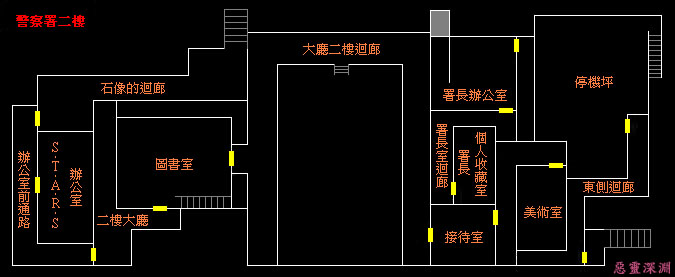
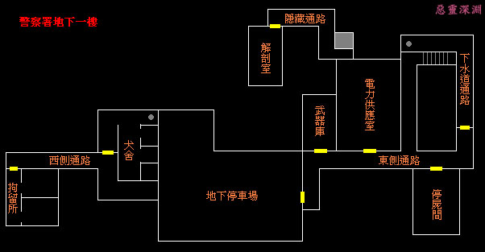
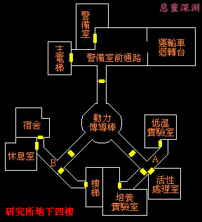
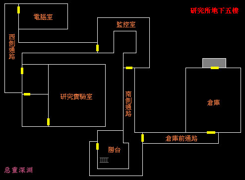

|
惡靈古堡２-----表•Leon攻略流程
|
以下的攻略可以取得所有的File，標綠色的道具是重要道具，一定要取。
| 遊戲開始後閃過路上的僵屍來到軍火用品店，店裡的兩側櫃檯有手槍子彈，
拿完正準備由另一扇門離開 時老闆遭受僵屍襲擊，老闆身上有散彈槍，可以選擇要不要把僵屍群打倒拿取。 出來後跑到底，救護車上有手槍子彈，由方才僵屍衝出來的門順著路走，經過樓梯，越過箱子。 經過一群啃咬屍體的僵屍來到公車上，門旁有一副手槍子彈，從公車前門下來，衝到警署大門。 進來後有兩條路，一條往下，如果一路上都沒有拿任何道具，往下的路會出現殺人僵屍Brad，身上有 Special Key可到警署裡換裝，兩條路只有其中一條有僵屍，出現殺人僵屍，上面的路就很安全。
進入警署大廳，直接前往西側辦公室，發生劇情，從Marvin處取得藍色磁卡。 在大廳櫃檯電腦使用藍色磁卡，櫃檯上有手槍子彈、色帶。 往服務處，椅子上有署內回覽。往西側通路，會碰上一隻利卡，通路底端有綠色藥草，經會議室前走廊到 作戰會議室。 會議室桌上有作戰報告書１、手槍子彈，到裡側壁爐前使用打火機(Leon基本裝備)，取得紅寶石。 經暗房前通路到暗房，桌上有作戰報告書２、色帶，暗房門前有綠色藥草２株，出來後上二樓到石像的迴 廊。 |

| 將石像的迴廊的兩座石像推到特定位置讓他們面向中間石像，得到紅寶石。
進入S.T.A.R.S辦公室，中央桌上有Chris的日記和獨角獸徽章，最左側看似長官的桌子連按五十次後得到底 片Ｄ，最右側辦公桌有個急救掛帶，可取得急救噴霧，門旁櫃子裡有散彈槍，左側第二個桌子上有手槍子 彈。要出門時與Claire相遇。 由原路回到大廳一樓，在女神石像前使用獨角獸徽章，得到黑桃鑰匙。 前往一樓檔案資料庫，入門右手最裡側的書架上有巡邏報告書，裡面的櫃子有急救噴霧，將梯子推到櫃子 前，取得櫃子上方的曲柄。 上二樓到二樓大廳，走廊旁的架子上有手槍子彈。 到圖書館，上樓梯跑到底，樓梯崩壞落下至小隔間，打開閃著紅燈的開關，把左邊兩個書架都向右移一格 ，回去小隔間得到主教插栓。 經大廳二樓迴廊到接待室，在椅子上有小鑰匙，桌上有秘書的日記Ａ、色帶。 經二樓東側迴廊（途中會經過逃生梯的門，先將他打開，外面有綠色藥草。東側迴廊地上屍體有手槍子 彈）到停機坪，由樓梯下去，到一樓的室外廣場，到置物小屋，有活門旋柄、色帶、手槍子彈。 回到停機坪，在鐵網裡使用活門旋柄滅火，從東側迴廊回到美術室前迴廊。 到美術室裝上兩顆紅寶石在女神像上，得到國王插栓，旁邊有方塊鑰匙、散彈槍子彈。 回到大廳二樓迴廊，將中央的逃生梯子放下去但不要下去，經圖書管道二樓大廳，用小鑰匙打開抽屜，得 到手槍組件，可以跟手槍組合。 從石像的迴廊下樓，到一樓的置物間，搜搜櫃子可得到散彈槍子彈、底片Ａ。 到西側辦公室，一進去就可以看到綠色藥草，到被隔起的辦公室，遇上Marvin僵屍化，右側桌上有紅心鑰 匙，外側桌上有手槍子彈，離往大廳的門最近的桌上有給Leon的字條。 從大廳到一樓東側辦公室，外側桌上有色帶，裡側的保險箱密碼是2236（署內回覽裡有寫），裡面有榴彈 、警察署地圖，背後的辦公桌後面有綠色藥草，逃生梯前屍體上有手槍子彈，外面有綠色藥草。 經休息室前通路下樓到地下室東側通路。
 （可以不去）到電力供應室取得綠色藥草、地下室地圖，調整電力供應的機器，正確的調法是「上. 上.下. 上.下」。 到地下停車場，與Ada相遇，右側有綠色藥草，要幫Ada推車，就像平常推東西一樣。 經西側通路到拘留所，發生劇情，在拘留所的櫃子上取得鐵鍬，打開的拘留間內有藍色藥草、綠色藥草。 前往犬舍，鐵籠裡有藍色藥草、紅色藥草，不過僵屍犬會衝出來，如果不想跟僵屍犬對決，就請直接在地 圖標示黑點處使用鐵鍬，由此下去，到達下水處理場的下水道通路。
左置物間裡有藍色藥草和色帶，進入淨水室再出來就會碰下Ada，發生劇情，角色切換。 Ada來到下水處理場中央部，往右到外牆通路可拿到散彈槍子彈，會傳給Leon，往左則要將排水控制室裡 的箱子推成一線，再按下開關，水上升後就可以踩箱子通過，櫃子上面有梅花鑰匙，靠門的 牆上有下水 處理場地圖。 回到中央通路，發生劇情，角色切換回Leon，拾起地上的東西，順著原路回到警署地下一樓。 （可以不去）進入停屍間，在最裡側拿到紅色磁卡，再到武器庫（先前要有去電力供應室調整才行），裡 面有手槍子彈兩副、散彈，另外在櫃子裡有衝鋒槍和腰包二選一（選走的那一個裡關就拿不到了，建議選 衝鋒槍）。 回到警署一樓，打開值班休息室，可以拿到散彈、沙漠之鷹、喬治的日記。 經ㄇ字通路到視聽室，在火爐前面使用打火機，依12皇后、13國王、11傑克的順序打開，金色齒輪就會掉 下，去將齒輪拾起，小桌上有底片Ｂ。 到偵訊室Ａ，拿起桌上的電線還有櫃子上的城堡插栓，桌上還有一瓶急救噴霧 ，小心利卡襲擊。 經由服務處到一樓西側通路，在窗旁的電箱使用電線（使用後就不會有僵屍從西側通路攻入，但是會在一 樓休息室前通路出現，玩家可以自己決定將電線用在哪裡），再來到暗房，將之前拿到的三捲底片沖洗。
帶著之前拿到的曲柄和金色齒輪從圖書室的樓梯來到大廳三樓，轉往機關室，在進門右手牆上使用曲柄， 由降下的樓梯上去，在齒輪處使用金色齒輪按下紅色按鈕，調查開啟的門取得騎士插栓，然後選 擇從此處 滑下。 滑下來後直接來到地下一樓的西側通路，發生劇情後前往拘留所，從Ben的手上接過給署長的函件折本， Ada前來會合，之後順著之前的路回到下水處理場。 在左置物間整理好裝備，因為等一下就要對付Ｇ的幼體，同時也把四個插栓拿出來，如果道具欄不夠等下 再來拿也可以。 進入淨水室，碰上Ｇ的幼體，勝利後將四個插栓在通往處理場出口的門旁使用，可將門打開。 在處理場出口再次與Ada相遇，會與Ada一起行動。
順著路來到倉庫Ａ，在桌上有給下水道管理員的Fax，其他還有色帶、急救噴霧、手槍子彈。 從箱子取出活門旋柄，搭電梯下樓到Ｔ字通路，發生劇情，角色切換成Ada。 Ｔ字通路牆上有地圖，從上方地圖標示東側下水道的黑點處樓梯往上，快速通過大蟑螂群，下來後發生劇 情，結束後從中間的鐵橋通過，由底端的樓梯下到垃圾處理場，角色切換成Leon。 Leon必須到地圖中東側下水道最下方的兩具屍體的地方取得豺狼徽章，經對外通路到機關室，有藍色藥草 栽培箱，若中毒趕快使用，使用活門旋柄，讓鐵橋降下，通過後再使用活門旋柄讓鐵橋升回去，附近有綠 色藥草、藍色藥草、散彈槍子彈，道具欄至少空一格。 經垃圾搬運道前往垃圾處理場，門打開後遇上鱷魚，立刻往回跑到垃圾搬運道中高壓氣瓶的所在處（有亮 燈指示），放下高壓氣瓶，待牠咬住後再秒準，一發即可使牠斃命。 回到垃圾處理場與Ada會合（附近有色帶），從Ada下來的樓梯上去，通過中央的鐵橋往左跑到底取得鷲鷹 徽章、下水道管理員日報表，在Ada下來的通風口使用活門旋柄後通過。 回到東側下水道，到對外通路的流水前機關使用豺狼徽章、鷲鷹徽章，待水退去後，經吊橋到纜車接駁場 ，打開右側的電源，進入纜車中，此時會碰上Ｇ-２的巨爪，只要看車頂落下的砂塵可以判斷他的行蹤， 用手槍輕鬆把他打敗吧！
出來到纜車接駁場，左側地板上有武器櫃鑰匙，可以不拿，西側通路上方死路底端有散彈槍組件，東側通 路右方死路底端有綠色藥草２株。 副控室裡有急救噴霧、散彈槍子彈、軍用手槍子彈，在此整理裝備，等下要跟Ｇ-２搏鬥。 操車廠牆上有地圖，櫃子上有手槍子彈，直接進入運輸車最裡側，拿到工廠鑰匙、軍用手槍子彈，將鑰匙 拿到運輸車外平台上的開關使用，使運輸車下降，Ｇ-２再度來襲，Ada受傷，Leon出運輸車，跟Ｇ-２戰 鬥，沙漠之鷹算是理想的武器，勝利後回運輸車內。
 帶著受傷的Ada到達研究所地下四樓的警備室，警備室有散彈槍子彈、軍用手槍子彈、綠色藥草、色帶， Ada脫隊。 獨自一人前往低溫實驗室，在裡側架子上取得保險絲外殼，在右側機器使用製成主保險絲，旁邊有急 救噴 霧。 將主保險絲拿到動力傳導棒使用，恢復電力。 經Ｂ通路到宿舍，長椅上有成員登錄法，電腦前有研究設施保安手冊，調查電腦，會詢問玩家是否打開 B.O.W瓦斯，建議不要，打開後會對食人植物造成影響，請參考敵人介紹。鐵櫃中有火炎放射器。 （可以不去）在宿舍的通風口上有植物的藤蔓，可以用打火機燒掉或用火炎放射器攻擊（燒掉後�媄鶼N不 會出現），從通風口爬到休息室，休息室鐵櫃裡有散彈槍子彈２副，電腦前有色帶。 打開通往樓梯的門，小心食人植物，用火炎放射器攻擊，樓梯也有一隻，還有兩株綠色藥草。
 由樓梯下來後到達地下五樓陽台，南側通路上有多隻利卡還有綠色藥草３株，可從監控室的電腦得到研究 所的地圖，經西側通路進入研究實驗室第一扇門，鐵櫃如有武器櫃鑰匙開啟，裡面有沙漠之鷹的組件，桌 上有急救噴霧，打開第二扇、第三扇門，在裡側桌上取得研究室磁卡。 （可以不去）用研究室磁卡打開電腦室，在電腦輸入GUEST，然後回到地下四樓的培養實驗室前登錄 指紋 ，這樣�媄鶼N可以進入拿取衝鋒槍。 照原路回地下四樓，前往活性處理室，打開電燈，裡面有急救噴霧、軍用手槍子彈，最重要的是拿到MO 片。出來後發生劇情，在Anette的身上取得Ｇ病毒。 回到動力傳導棒，Ada出現奪取Ｇ病毒遭襲，從道路上掉落，Leon接著到地下五樓，可以先去監控室整理 裝備，準備對付Ｇ-４，記得要帶MO片。 在南側通路的配電板使用MO片，打開通往倉庫的門，到倉庫後離爆破只剩五分鐘，前去按下電梯的按鈕 ，此時Ｇ-４出現，需要打他兩次，建議使用沙漠之鷹。勝利後趕快搭上電梯，下電梯後順著路跑（時間 仍在倒數），動畫出現，Leon總算是脫困了。 |
惡靈深淵Biohazard Abyss http://98.to/coolbio